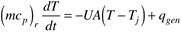
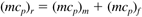
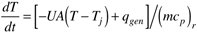
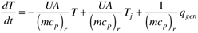
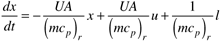
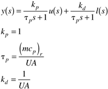
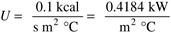

| [ Team LiB ] |
|
M11.2 Batch Model 1: Jacket Temperature ManipulatedIn this section we focus on the development of a mathematical model for the reactor temperature dynamics; we will assume that the jacket temperature is directly manipulated. A number of other assumptions will be made in the development of a mathematical model to describe the dynamic batch reactor behavior. First of all, we will assume that the reactor is perfectly mixed. Also, for simplicity we lump all reaction heat effects into a single heat generation term, qgen. Physical parameters, such as density and the heat transfer coefficient, are assumed to be constant.  where U = heat transfer coefficient, A = area for heat transfer. Notice that the accumulation term includes the effect of the "thermal mass" of the reactor wall  where (mcp)m is the "thermal mass" (mass * heat capacity, including the metal as well as the glass lining) of the reactor wall and any other inert components (agitator, baffles, etc.). Also, (mcp)f is the contribution of the reactor fluid (Vrcp). For small (laboratory) scale reactors the contribution of the reactor wall and other inert components can be significant, while the relative contribution is insignificant for large scale reactors. Equation (M11.1) can be rewritten  The fundamental model shown in (M11.3) is linear. The more familiar state-space form is  Or, using deviation variable form  where reactor temperature is the state (and output), jacket temperature is the manipulated input, and heat generation is the load disturbance. The resulting input-output transfer function models relating the manipulated and disturbance inputs to the measured reactor output are first-order (see Additional Exercise 1)  Effect of Scale (Size)Notice that the time constant is the "thermal mass" divided by the UA. If both of these terms increased proportionally with the reactor volume, then studies conducted in a laboratory would be directly applicable to large-scale production vessels. The problem is that the mass of the fluid increases linearly with reactor volume, but the heat-transfer area does not. As a result, the time constant of the reactor increases as the reactor gets larger. Essentially, on a per-volume basis, the ability to transfer heat goes down as the volume increases. In the following studies we will consider three different reactors: (i) laboratory scale (1 liter), (ii) pilot-plant scale (0.5 m3), and (iii) manufacturing scale (10 m3). We will assume that the heat-transfer coefficient is the same for each of these reactors, but that the heat transfer area changes. The heat transfer coefficient used is  Assume that the reactor is a vertical cylinder with a height/diameter ratio of 2, and that a heating/cooling jacket fully covers the bottom and sides of the reactor. This yields the results shown in Table M11-1. Quasi-Steady-State BehaviorIf the heat-generation term is constant, then there exists a steady-state temperature difference between the reactor and jacket such that the heat flows are balanced. From Equation (M11.1) we see
Problem M11.1 Effect of Reactor Scale on Heat Transfer Capability For each scale of reactor, determine the heat flow, on a per-volume basis, if the temperature difference between the reactor and jacket is 20°C. How much more "efficient" at transferring heat is a 1 liter reactor compared to a 10-m3 reactor? Problem M11.2 Effect of Reactor Scale on Process Time Constant For each scale of reactor, find the process time constant (tp) assuming that the process fluid is water and neglecting the thermal effect of the reactor mass. For controller tuning, we suggest that you use an initial l value of 1/4 tp for future simulations. IMC-Based DesignIn the Internal Model Control (IMC) design procedure used throughout most of this text we have focused on the response to step setpoint changes. IMC can also be designed for ramp setpoint changes or for the rejection of process input disturbances. What differs about the design is the specification of the filter. For each case the filter is shown below.
where n is chosen to make the internal model controller physically realizable. For a first-order process, you should verify the following results.
It is very important to use antireset windup (ARW) strategies when using PID controllers on batch reactors, since the manipulated inputs are often constrained. For the following problems assume that the jacket temperature is constrained to be between (–10°C and 150°C). For each of the following problems use the corresponding controller design. Problem M11.3 IMC-Based PI Control: Step Setpoint Tracking Here we require that the reactor temperature setpoint be changed from 20°C to 50°C. Compare responses to step setpoint changes, for each size reactor. Discuss the practical limitations to the expected dynamic performance for each size reactor, especially considering the constraints on jacket temperature. Problem M11.4 IMC-Based PI Control: Ramp Setpoint Tracking Here we require that the reactor temperature setpoint be changed from 20°C to 50°C. Compare responses to ramp setpoint changes, for each size reactor. Discuss the practical limitations to the expected dynamic performance for each size reactor, especially considering the constraints on jacket temperature. Also, what are practical limitations on the ramp time as a function of scale? For example, perhaps a 10-minute ramp time is fine for the laboratory scale reactor; is it feasible for the larger scale reactors? Problem M11.5 IMC-Based PI Control: Disturbance Rejection After the reactor has been heated to 50°C, assume that a reaction heat flow of 0.05 kW/liter (50 kW/m3) is initiated. Compare the closed-loop performance as a function of reactor scale; compare the maximum deviation from the desired value of 50°C for each scale reactor. |
| [ Team LiB ] |
|